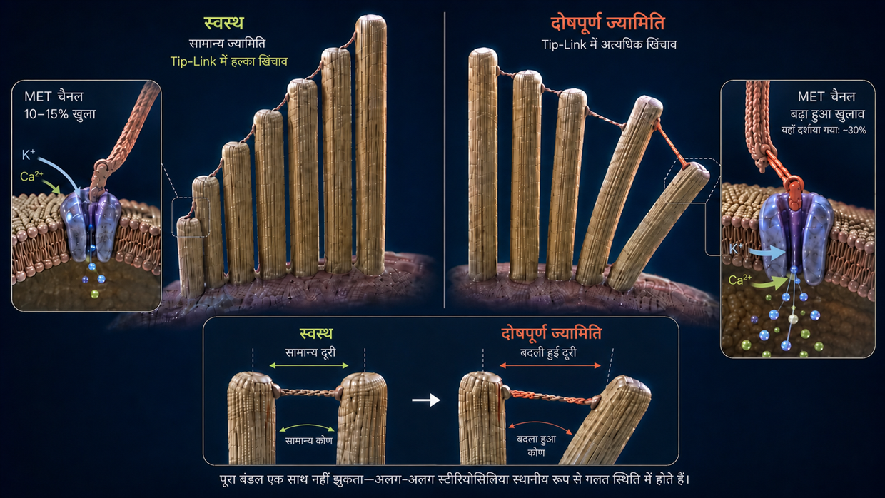
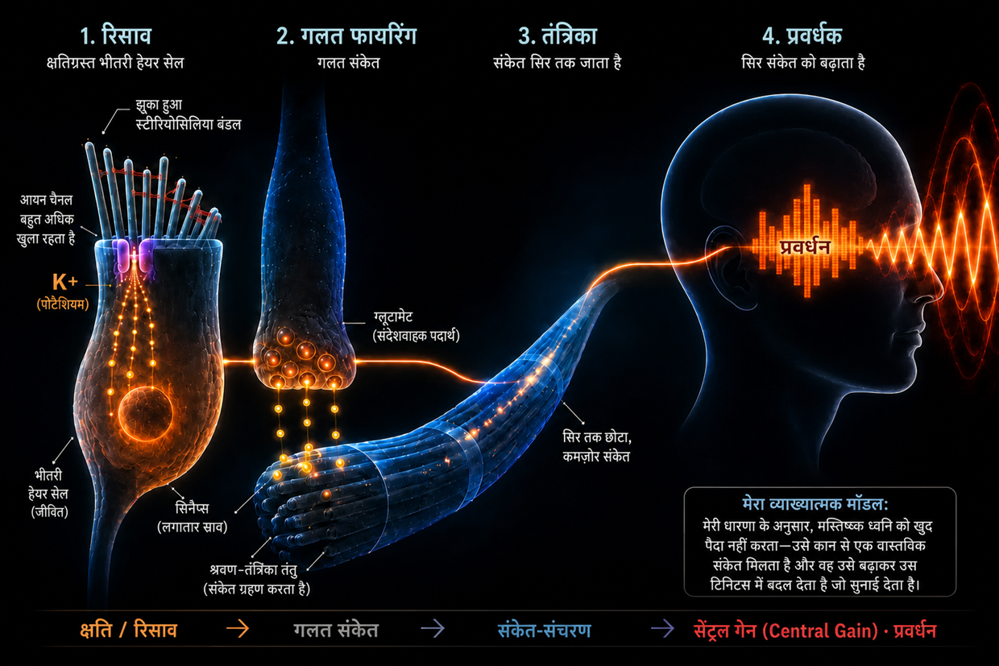

शोर के कारण होने वाला टिनिटस—जब कान अपनी सीमा पर पहुँच जाता है
अंतिम अपडेट: अगस्त 2026
यह मेरी अपनी व्याख्या है, जो वर्षों की रिसर्च और अपने टिनिटस को दो बार मात देने के मेरे अनुभव पर आधारित है—यह कोई चिकित्सकीय मानक नहीं है।
उस समय मैं भी इस अत्यंत गंभीर बीमारी से प्रभावित था—जैसा कि मैं अपनी जीवनी में पहले ही बता चुका था।
मैं इतना हताश था कि मैंने खुद से कसम खाई थी: या तो टिनिटस जाएगा, या मैं चला जाऊँगा। (बेशक, मेरा मतलब इतनी गंभीरता से नहीं था, लेकिन मैं सचमुच भारी दबाव में था।)
उस समय मुझे मुख्य रूप से बाएँ कान में एक तेज़, तीखा, ऊँची फ़्रीक्वेंसी वाला टोन सुनाई देता था, जिसके साथ बहुत दूर पृष्ठभूमि में साँय-साँय की आवाज़ थी। उस समय मैं इससे बुरा कुछ कल्पना भी नहीं कर सकता था। मुसीबत और बढ़ाते हुए, तीसरे दिन दाएँ कान में भी पहले से ही एक हल्की बीप उभर चुकी थी। उसके कुछ ही समय बाद दाएँ कान का यह पहले से मौजूद टोन साफ़ तौर पर अधिक तेज़ हो गया—डॉक्टरों के उन निर्देशों के सीधे परिणामस्वरूप, जो मेरे अपने मामले में पूरी तरह गलत साबित हुए।
इन “निर्देशों” का मूल मतलब टोन को दूसरी आवाज़ों से ढकना था—मिसाल के लिए, हेडफ़ोन पर अधिक तेज़ आवाज़ में संगीत सुनना या लगातार शोर चलाए रखना। लेकिन वास्तव में इसका मतलब था कि मेरे कानों पर और भी अधिक ध्वनि-उत्तेजनाएँ पड़ रही थीं, जबकि वे पहले ही बहुत ज़्यादा बोझ में थे। पीछे मुड़कर देखता हूँ तो यह सबसे बड़ी गलतियों में से एक थी, क्योंकि ठीक इसी वजह से मेरी हालत बिगड़ी और दाएँ कान का पहले से मौजूद हल्का टोन साफ़ तौर पर और अधिक तेज़ हो गया।
यह आवाज़ मेरी नसों, मेरी नींद और मेरी पूरी ज़िंदगी पर लगातार हमले जैसी थी। डॉक्टरों ने मुझसे कहा कि मुझे इसके साथ जीना सीखना होगा। इंटरनेट पर मुझे ऐसी थेरेपियाँ मिलीं, जो एक-दूसरे का विरोध करती थीं। मुझे हर बात में बस असमंजस ही नज़र आया।
इसलिए मैंने खुद से कसम खाई: बस इतना ही नहीं हो सकता। मैंने एक जुनूनी व्यक्ति की तरह रिसर्च शुरू की, अध्ययन पढ़े, अनुभव-कथाओं की तुलना की और अपनी समझ बनाई। धीरे-धीरे एक स्पष्ट तंत्र उभर आया—एक ऐसी तस्वीर, जो मुझे तार्किक लगी और बाद में मेरे अपने अनुभवों में भी जिसकी पुष्टि हुई।
आज मैं कह सकता हूँ: शोर के कारण होने वाला टिनिटस कोई रहस्य नहीं है। यह कान पर उसकी क्षमता से अधिक बोझ पड़ने का परिणाम है—और अगर यह समझ में आ जाए कि वहाँ क्या होता है, तो यह भी समझ में आता है कि वह आवाज़ क्यों है और खुद क्या किया जा सकता है।
संक्षेप 60 सेकंड में पढ़ें—एक नज़र में सबसे ज़रूरी बातें
अत्यधिक तेज़ आवाज़ (जैसे डिस्को) में पंप काम की रफ़्तार पकड़ ही नहीं पाते। ऊर्जा (ATP) की खपत विस्फोटक रूप से बढ़ जाती है, कोशिका उतनी ऊर्जा फिर उपलब्ध नहीं करा पाती और एक अव्यवस्थित आपात मोड में चली जाती है, जिसमें लैक्टिक एसिड बनता है और कोशिकीय परिवेश अम्लीय हो जाता है—गिरावट का ऐसा दुष्चक्र, जो स्प्रिंट के दौरान मांसपेशियों के जवाब दे देने जैसा है। जब पंप काम की रफ़्तार नहीं पकड़ पाते, तो सूक्ष्म संवेदी बालों के भीतर कैल्शियम जमा होने लगता है। यह अतिरिक्त कैल्शियम अपघटन करने वाले एंज़ाइमों (कैल्पेन) को सक्रिय करता है, जो बाल के भीतर के संरचनात्मक तंतुओं के बीच मौजूद “गोंद” (क्रॉसलिंकर) को खा जाते हैं। इस गोंद के बिना बाल अपनी कठोरता खो देता है और विकृत हो जाता है। इससे उसके सिरे का आयन चैनल स्थायी रूप से बहुत ज़्यादा खुला रहता है—एक तिरछी खुली खिड़की की तरह। इस स्थायी लीकेज से पोटैशियम लगातार भीतर आता है और पूरी कोशिका को निरंतर विद्युत तनाव में रखता है। यह तनाव भीतरी हेयर सेल में ही दूसरे चैनल खोल देता है, जिनसे कैल्शियम बूंद-बूंद सिनैप्स तक पहुँचता है और वहाँ से श्रवण तंत्रिका की ओर ग्लूटामेट का बिना रुके स्राव शुरू कर देता है। मस्तिष्क इस हल्के, लेकिन लगातार बने रहने वाले गलत संकेत को ग्रहण करता है, पहचानता है कि इस फ़्रीक्वेंसी क्षेत्र में सामान्य इनपुट नहीं मिल रहा और अपने अंदरूनी प्री-एम्प्लीफ़ायर—सेंट्रल गेन (Central Gain)—को बहुत अधिक बढ़ा देता है। इस बढ़ोतरी के बाद ही वह सूक्ष्म गलत संकेत सचेत रूप से सुनाई देने वाला टोन—टिनिटस—बनता है।
अच्छी खबर: जब तक कोशिका जीवित है, उसके पास निर्माण का खाका और मरम्मत की क्षमता होती है। इसके लिए उसे ऊर्जा, निर्माण-सामग्री और शांति चाहिए।
कान में वास्तव में क्या होता है: सुनने की सामान्य शारीरिक प्रक्रिया
गहराई में जाने से पहले शब्दावली से जुड़ी एक छोटी-सी बात स्पष्ट कर लें, ताकि पूरे लेख में हम एक-दूसरे को ठीक तरह समझें: भीतरी कान में तथाकथित हेयर सेल्स होती हैं—सुनने की वास्तविक संवेदी कोशिकाएँ। हर हेयर सेल की सतह पर उँगली जैसे सूक्ष्म उभारों का एक गुच्छा होता है—स्टीरियोसिलिया। कॉक्लिया में हेयर सेल की स्थिति के अनुसार इनकी संख्या लगभग 50 से 300 होती है। ये ऑर्गन के पाइपों की तरह छोटे से लंबे क्रम में पंक्तियों में लगे होते हैं। इनमें से हर एक के भीतर एक्टिन प्रोटीन का अपना सहायक ढाँचा होता है। रोज़मर्रा की भाषा और शोध में भी इन स्टीरियोसिलिया को अक्सर बस “बाल” या “संवेदी बाल” कहा जाता है—और इस पेज पर मैं भी यही शब्द इस्तेमाल करता हूँ। महत्वपूर्ण बात: जब मैं “बाल” कहता हूँ, तो मेरा मतलब हमेशा हेयर सेल के ऊपर मौजूद स्टीरियोसिलिया से होता है, खुद हेयर सेल से नहीं।
संकेत-शृंखला के लिए महत्वपूर्ण: जब मैं सिनैप्स पर ग्लूटामेट के स्राव और श्रवण तंत्रिका तक जाने वाले संकेत का वर्णन करता हूँ, तो उसका स्पष्ट अर्थ भीतरी हेयर सेल है।
सामान्यतः सुनने की प्रक्रिया एक अत्यंत सटीक शृंखलाबद्ध प्रतिक्रिया के रूप में चलती है:
उत्तेजना: ध्वनि की उत्तेजना हेयर सेल्स के सूक्ष्म बालों (स्टीरियोसिलिया) पर पड़ती है और उन्हें एक ओर मोड़ती है।
यांत्रिक खिंचाव (टिप-लिंक्स): इन बालों के सिरे प्रोटीन के अत्यंत महीन तंतुओं (टिप-लिंक्स) से आपस में जुड़े होते हैं, इसलिए मुड़ने पर खिंचाव पैदा होता है। ये तंतु एक यांत्रिक खींच-तंत्र की तरह काम करते हैं: वे सिरे पर मौजूद आयन चैनल को भौतिक रूप से खींचकर खोलते हैं—बाथटब के उस प्लग की तरह, जिसे खींचकर खोला जाता है।
भीतर का प्रवाह: भीतरी कान पोटैशियम-समृद्ध द्रव से भरा होता है, इसलिए अब खुले हुए इस चैनल से पोटैशियम (K+) तुरंत संवेदी बाल में प्रवेश करता है—और थोड़ी मात्रा में कैल्शियम भी।
सक्रिय होना: पोटैशियम का यह प्रवाह भीतरी हेयर सेल के विद्युत वोल्टेज को बदल देता है (डीपोलराइज़ेशन)। इसके फलस्वरूप भीतरी हेयर सेल में ही नीचे स्थित कैल्शियम चैनल खुलते हैं—संवेदी बालों में नहीं, बल्कि उनके नीचे मौजूद कोशिका-शरीर में।
संकेत: भीतरी हेयर सेल में प्रवेश करने वाला यही कैल्शियम न्यूरोट्रांसमीटरों का स्राव कराता है, जो संकेत को श्रवण तंत्रिका के रास्ते मस्तिष्क तक दागते हैं।
रीसेट: इसके बाद विशेष ट्रांसपोर्टर—संवेदी बालों और हेयर सेल के कोशिका-शरीर, दोनों में—ATP (कोशिकीय ऊर्जा) की मदद से अतिरिक्त पोटैशियम और कैल्शियम को फिर बाहर पंप करते हैं, ताकि कोशिका शांत हो सके।
यह तंत्र इस तरह बना है कि इसमें लगातार थोड़ा-सा “खुलना और बंद होना” चलता रहे—साँस की लय की तरह। इसमें निर्णायक बात यह है: विश्राम की अवस्था में बाल के सिरे का चैनल पूरी तरह बंद नहीं होता, बल्कि हमेशा थोड़ा-सा खुला रहता है—यह सामान्य और इच्छित है, ताकि कोशिका किसी भी समय सबसे हल्की ध्वनि पर तुरंत प्रतिक्रिया कर सके। जब तक बाल सीधा खड़ा रहता है, यह खुलाव बहुत कम और नियंत्रित रहता है। लेकिन अगर बाल स्थायी रूप से एक ओर झुक जाए, तो चैनल बहुत ज़्यादा खुला रहता है—और यही समस्या बन जाती है।
अब यह देखने से पहले कि इस तंत्र पर बहुत अधिक बोझ पड़ने पर क्या होता है, एक महत्वपूर्ण विचार: शोर से लगी चोट के बाद अगर क्रॉनिक टिनिटस पैदा होता है, तो बहुत से प्रभावित लोग सोचते हैं—और बहुत से डॉक्टर भी यही छाप देते हैं—कि कान के हेयर सेल्स अपरिवर्तनीय रूप से नष्ट हो चुके हैं और अब मस्तिष्क याददाश्त से अपने आप यह टोन बना रहा है। मेरे विश्वास के अनुसार यह निष्कर्ष अधूरा है। ठीक इसलिए कि टोन मौजूद है, मेरे विश्वास के अनुसार अब भी उत्तेजित हो सकने वाले किसी परिधीय ऊतक में एक सक्रिय गलत संकेत पैदा होना ही चाहिए। मेरी मुख्य शृंखला में यह संकेत एक अभी भी जीवित, गलत ढंग से नियंत्रित भीतरी हेयर सेल से आता है। दूसरी परिधीय स्थितियों में माइलिन की समस्या या सूजन के कारण गलत संकेत छोड़ने वाली कोई जीवित श्रवण तंत्रिका भी स्रोत हो सकती है। इसके विपरीत, पूरी तरह मृत ऊतक अब कोई संकेत नहीं भेजता।
अब इस कार्य-हानि की विस्तृत, चरण-दर-चरण व्याख्या आती है। जो इसे अधिक संक्षेप में पढ़ना चाहते हैं, उन्हें इस पेज पर ऊपर संक्षेप मिल जाएगा।
जब शोर बहुत ज़्यादा हो जाता है (डिस्को जाने पर क्या होता है)
लेकिन जब बहुत अधिक ध्वनि एक साथ या लंबे समय तक (क्रॉनिक रूप से) पड़ती है, तो संतुलन बिगड़ जाता है और यांत्रिकी विफल हो जाती है। हर बार डिस्को जाना ऐसा नहीं करता—लेकिन जब शोर के कारण टिनिटस पैदा होता है, तो मेरे विश्वास के अनुसार उसके पीछे ठीक यही तंत्र होता है: ऊर्जा की हानि, यांत्रिक ढहाव और रासायनिक बाढ़ की एक शृंखला—तीन प्रक्रियाएँ, जो एक-दूसरे को भड़काती हैं और दुष्चक्र में बदल जाती हैं।
- 01ऊर्जा का पतन
- 02यांत्रिक ढहाव
- 03आपात बचाव और हैम्स्टर-व्हील
चरण 1: ऊर्जा का पतन
सुनने की सामान्य प्रक्रिया याद करें: हर ध्वनि-उत्तेजना पर आयन कोशिका में प्रवेश करते हैं और उसके बाद ATP खर्च करके उन्हें फिर बाहर पंप करना पड़ता है। सामान्य आवाज़ में यह एक आरामदेह लय है—कोशिका इत्मीनान से पंप करती है और उसके पास भरपूर ऊर्जा होती है। लेकिन डिस्को में 100 डेसिबल पर ध्वनि-तरंगें बिना रुके और प्रचंड ताक़त से बालों पर बरसती हैं। चैनल झटके से खुलते हैं, आयन भारी मात्रा में भीतर आते हैं और पंप काम की रफ़्तार पकड़ ही नहीं पाते। ऊर्जा की खपत विस्फोटक रूप से बढ़ जाती है।
अब हेयर सेल्स जितनी ऊर्जा फिर उपलब्ध करा सकती हैं, उससे कहीं अधिक ऊर्जा जलाती हैं। कोशिका के सामान्य ऊर्जा संयंत्र (माइटोकॉन्ड्रिया) अपनी सीमा पर चल रहे होते हैं। ऊर्जा की इस विशाल भूख को किसी तरह पूरा करने के लिए कोशिका एक अधिक तेज़, लेकिन अव्यवस्थित आपात रास्ता अपनाती है: एनएरोबिक ग्लाइकोलाइसिस। यह आपात मोड तुरंत ऊर्जा तो देता है, लेकिन अपशिष्ट के रूप में लैक्टिक एसिड (लैक्टेट) बनाता है, जो कोशिकीय परिवेश को अम्लीय कर देता है। ऊर्जा उत्पादन के लिए ज़िम्मेदार एंज़ाइम इस अम्ल के कारण लगातार कम प्रभावी होते जाते हैं—गिरावट का दुष्चक्र।
खेल से तुलना: वज़न उठाने या स्प्रिंट करने से हर कोई इसे जानता है। कुछ समय बाद मांसपेशी “जलने” लगती है (लैक्टेट बढ़ता है) और आख़िरकार जवाब दे देती है—मांसपेशी के जवाब दे देने की जानी-पहचानी अवस्था। ठीक यही रासायनिक विफलता भीतरी कान में भी होती है, बस इसे दर्द के रूप में नहीं, बल्कि कार्य बंद पड़ने के रूप में महसूस किया जाता है।
और यहीं असली ख़तरा छिपा है: जब पंप काम की रफ़्तार नहीं पकड़ पाते, तो संवेदी बालों के भीतर कैल्शियम जमा होने लगता है। थोड़ी मात्रा में यह कैल्शियम सामान्य और ज़रूरी है—लेकिन अधिक मात्रा में यह विनाशक बन जाता है। यह क्या नष्ट करता है और यह इतना घातक क्यों है, इसे चरण 2 दिखाता है।
चरण 2: यांत्रिक ढहाव
अब कैल्शियम क्या नुकसान करता है, इसे समझने के लिए संवेदी बाल की अंदरूनी बनावट जानना ज़रूरी है: यह सैकड़ों समानांतर एक्टिन तंतुओं से बना होता है—इसे बिना पकी स्पेगेटी के एक गुच्छे की तरह समझा जा सकता है। इन तंतुओं को छोटे प्रोटीन-पुल आपस में चिपकाए रखते हैं, जिन्हें क्रॉसलिंकर कहा जाता है। ये क्रॉसलिंकर बाल के वास्तविक संरचनात्मक इंजीनियर हैं—वे गुच्छे को इतनी मज़बूती से जोड़े रखते हैं कि वह अपने आप, बिना ऊर्जा खर्च किए, स्टील के पाइप की तरह कठोर खड़ा रहता है। जब तक क्रॉसलिंकर सही-सलामत हैं, बाल सीधा खड़ा रहता है।
चरण 1 में ऊर्जा की हानि अब एक घातक शृंखलाबद्ध प्रतिक्रिया शुरू कर देती है:
पंपों पर कैल्शियम की बाढ़ हावी हो जाती है: जैसा कि हमने सुनने की सामान्य प्रक्रिया में देखा, पोटैशियम के साथ थोड़ी मात्रा में कैल्शियम भी हमेशा संवेदी बाल में प्रवेश करता है। सामान्य कामकाज में यह समस्या नहीं है—इसके लिए संवेदी बाल की झिल्ली में अपने कैल्शियम पंप होते हैं, जो इस कैल्शियम को तुरंत फिर बाहर निकाल देते हैं। लेकिन इन पंपों को भी ATP चाहिए। डिस्को के तीव्र अतिभार में ऊर्जा कहीं से भी पर्याप्त नहीं रहती—पंपों पर सचमुच बाढ़ हावी हो जाती है। नतीजा: कैल्शियम की जो छोटी मात्रा सामान्यतः समस्या नहीं होती, वह अब बाल के भीतर जमा होने लगती है—और ठीक यही अत्यधिक सांद्रता वास्तविक संरचनात्मक ढहाव शुरू करती है।
और अब वास्तविक संरचनात्मक ढहाव आता है: जमा हुआ कैल्शियम विशेष अपघटन एंज़ाइमों (तथाकथित कैल्पेन) को सक्रिय करता है। ये एंज़ाइम ठीक उन्हीं क्रॉसलिंकर को खा जाते हैं, जिनसे हम अभी परिचित हुए—यानी उस गारे को, जो गुच्छे को एक साथ जोड़े रखता है।
यह इतना विनाशकारी क्यों है, इसे समझने में एक सरल चित्र मदद करता है:
बिना पकी एक स्पेगेटी हाथ में लें—आप उसे आसानी से मोड़ और तोड़ सकते हैं। अब सौ स्पेगेटी लें और उन्हें इंस्टेंट ग्लू से चिपकाकर एक ठोस छड़ बना दें—अचानक आपके पास एक कठोर पाइप है, जिसे मोड़ना लगभग असंभव है। अलग-अलग तंतु कमज़ोर हैं, लेकिन चिपक जाने पर वे मज़बूत हो जाते हैं।
संवेदी बाल ठीक इसी तरह काम करता है: उसे केवल एक्टिन तंतु कठोर नहीं बनाते, बल्कि क्रॉसलिंकर की मदद से बना तंतुओं का संयुक्त ढाँचा कठोर बनाता है।
अब जब कैल्पेन इस गोंद को खा जाते हैं, तो इसका उलटा होता है: कठोर पाइप फिर अलग-अलग ढीले तंतुओं में बदल जाता है। एक्टिन तंतु अभी भी स्टीरियोसिलिया के भीतर मौजूद हैं—वे गायब नहीं हुए, लेकिन उनके बीच के जोड़ न रहने से वे अब साथ नहीं टिकते। बाल अपनी कठोरता इसलिए नहीं खोता कि कुछ टूट गया है, बल्कि इसलिए कि भीतर का आपसी जुड़ाव खत्म हो गया है।
अगर वह व्यक्ति अभी भी डिस्को में बना रहता है, तो स्थिति अक्सर और भी बिगड़ती है: अब असुरक्षित और अलग-अलग खड़े तंतु लगातार ध्वनि-दबाव के नीचे कमज़ोर जगहों पर सचमुच टूट सकते हैं—उन अलग-अलग स्पेगेटी की तरह, जो पड़ोसी तंतुओं का सहारा न होने पर भार के नीचे मुड़कर टूट जाती हैं। और अगर एक तंतु टूटता है, तो पड़ोसी तंतुओं पर भार बढ़ जाता है और वे भी टूट सकते हैं—शृंखलाबद्ध प्रभाव का ख़तरा पैदा हो जाता है।
नतीजा: अपना अंदरूनी सहारा खो देने पर बाल सीधा खड़ा नहीं रह सकता—वह विकृत हो जाता है। इसका अर्थ समझने के लिए यह चित्र मदद करता है: संवेदी बाल अलग-अलग लंबाई में एक-दूसरे के पास पंक्तियों में खड़े होते हैं और उनके सिरे महीन तंतुओं (टिप-लिंक्स) से आपस में जुड़े होते हैं। स्वस्थ अवस्था में सभी बाल एकदम सीधे खड़े रहते हैं—उनके बीच के तंतुओं में बिल्कुल सही खिंचाव होता है और विश्राम की अवस्था में चैनल बहुत थोड़ा खुला रहता है। ध्वनि-तरंग आने पर बाल थोड़ी देर के लिए एक ओर झुकते हैं, तंतु खिंचते हैं और चैनल खुल जाता है—तरंग बीतते ही वे वापस लौटते हैं और सब कुछ फिर ढीला पड़ जाता है। साफ़-सुथरा खुलना और बंद होना।
अब कल्पना कीजिए कि वही बाल सीधे खड़े नहीं हैं, बल्कि तिरछे लटक रहे हैं—तब भी, जब कोई तरंग नहीं आ रही। उनके बीच के तंतु लगातार उस तरह से अलग खिंचे रहते हैं, जैसा होना नहीं चाहिए। साथ ही झिल्ली भी टेढ़ी हो जाती है। इससे चैनल विश्राम की अवस्था में ही बहुत ज़्यादा खुला रहता है। इस बिंदु से पोटैशियम और कैल्शियम लगातार और अनियंत्रित रूप से कोशिका में प्रवेश करते हैं, हालाँकि संगीत कब का बंद हो चुका होता है। स्थायी लीकेज बन चुका है—और इसके साथ टिनिटस की बुनियाद भी। कोई ध्वनि न होने पर भी भीतरी हेयर सेल संकेत दागता है—क्योंकि ज्यामिति अब सही नहीं है।

शोर के कारण होने वाला टिनिटस शोर की घटना के तुरंत बाद ध्यान में आ सकता है, लेकिन कभी-कभी घंटों या दिनों बाद ही सचेत रूप से महसूस होता है। मेरे मामले में टोन पहली बार 3वें दिन ध्यान में आया; क्यों, यह मैं आज तक निश्चित रूप से नहीं जानता। संभावित व्याख्याओं को मैं FAQ में स्पष्ट रूप से परिकल्पनाओं के रूप में बताऊँगा।
चरण 3: आपात बचाव—और यह पर्याप्त क्यों नहीं है
कोशिका क्षति दर्ज करती है और तुरंत जीवित रहने का एक तंत्र शुरू करती है: विशेष मरम्मत-प्रोटीन (जैसे XIRP2), जो पहले से कोशिका-शरीर में आपात भंडार के रूप में तैयार पड़े होते हैं, क्षतिग्रस्त जगहों की ओर दौड़ते हैं। अगर तंतु टूटे हों, तो वे आणविक बख़्तरबंद टेप की तरह टूटने की जगहों (चरण 2 की स्पेगेटी) के चारों ओर लिपट जाते हैं और उन्हें पूरी तरह टूटने तथा शृंखला को नियंत्रण से बाहर जाने से रोकते हैं। यह है फेज़ 1: तीव्र आपात स्थिरीकरण। यह प्रक्रिया तेज़ी से (मिनटों से घंटों में) होती है, क्योंकि XIRP2 को पहले बनाना नहीं पड़ता—उसे केवल क्षतिग्रस्त जगह पर भर्ती किया जाता है। संवेदी बाल बच जाता है—लेकिन ढाँचा नरम और अस्थिर रहता है, क्योंकि फ़िलामेंटों के बीच गायब क्रॉसलिंकर की जगह XIRP2 नहीं ले सकता।
अब फेज़ 2 (सक्रिय पुनर्गठन) अनिवार्य रूप से शुरू होना चाहिए—और इसमें एक साथ दो निर्माण-स्थल शामिल हैं: पहला, XIRP2 के पैबंदों को नए, सही-सलामत एक्टिन से बदलना होगा। दूसरा, नए क्रॉसलिंकर बनाकर फ़िलामेंटों के बीच लगाने होंगे, ताकि गुच्छे को फिर एक ठोस छड़ की तरह जोड़ा जा सके। दोनों में भारी मात्रा में ATP खर्च होता है, दोनों को कोशिका-शरीर से सामग्री चाहिए, और स्टीरियोसिलिया के अपने ऊर्जा संयंत्र (माइटोकॉन्ड्रिया) नहीं होते—वे पूरी तरह नीचे मौजूद हेयर सेल के शरीर से मिलने वाली ऊर्जा पर निर्भर हैं। लेकिन ठीक यहीं अधिकांश वयस्क लोगों में क्रॉनिक जाल अपना फंदा कस देता है। ऐसा क्यों होता है, यह अगला अध्याय समझाता है।
-
01ऊर्जा का पतन
ATP की खपत विस्फोटक रूप से बढ़ती है, कोशिका आपात मोड में चली जाती है। लैक्टिक एसिड जमा होता है और कोशिकीय परिवेश अम्लीय हो जाता है।
-
02यांत्रिक ढहाव
अतिरिक्त कैल्शियम स्टीरियोसिलिया के तंतुओं को जोड़ने वाले “गोंद” को खा जाता है। बाल विकृत हो जाता है—लीकेज बन जाता है।
-
03आपात बचाव और हैम्स्टर-व्हील
XIRP2 टूटने की जगहों को स्थिर करता है। तीव्र अवस्था में कोशिका बच जाती है—लेकिन वास्तविक मरम्मत के लिए ऊर्जा नहीं बचती।
हैम्स्टर-व्हील का जाल: मरम्मत क्यों लगातार रुकी रहती है
अब तीव्र घटना से क्रॉनिक समस्या में बदलने वाला निर्णायक मोड़ आता है।
शोर बंद होते ही पुनर्बहाली शुरू हो जाती है: कोशिका तुरंत फिर से ATP बनाने लगती है और पंप धीरे-धीरे सामान्य कामकाज में लौटने लगते हैं। पुनर्जनन का पूरा काम—अम्लता कम करना, मरम्मत करना और ऊर्जा के भंडार फिर से भरना—फिर समय के साथ और खास तौर पर नींद में होता है। यानी शरीर सफ़ाई करता है: आयनों की जो तीव्र बाढ़ डिस्को में पड़े भारी बोझ और इस बीच बन चुके रिसाव, दोनों के कारण जमा हुई थी, उसे धीरे-धीरे बाहर निकाला जाता है। आयनों का चरम स्तर काफ़ी हद तक सामान्य हो जाता है और इसके साथ कैल्शियम का स्तर भी महत्वपूर्ण सीमा से नीचे आ जाता है: विघटनकारी एंज़ाइम (कैल्पेन) निष्क्रिय हो जाते हैं और सक्रिय संरचनात्मक क्षति रुक जाती है।
फिर भी कान ठीक क्यों नहीं होता?
क्योंकि स्थायी रिसाव बना रहता है। स्टीरियोसिलिया लगातार टेढ़े बने रहते हैं, आयन चैनल लगातार ज़रूरत से ज़्यादा खुला रहता है और पंपों को इस अतिरिक्त मात्रा को चौबीसों घंटे बाहर निकालना पड़ता है। ठीक यही बात मरम्मत को क्यों रोकती है, इसे समझने में अगली तस्वीर मदद करती है:
छत–घर–तहखाना सिद्धांत
इस दुविधा को एक नज़र में समझने के लिए हेयर सेल को ऐसी इमारत के रूप में देखने से मदद मिलती है, जिसे एक ही बिजली का मीटर (ATP) ऊर्जा देता है:
छत: कमज़ोर एक्टिन-ढाँचे वाले बारीक संवेदी बाल (स्टीरियोसिलिया), जो फेज़-1 के आपात मोड में फँसे हैं। रिसाव यहीं ऊपर है और असल में निर्माण का इंजन भी यहीं काम करना चाहिए। लेकिन इसके बजाय छत के अपने पंप भीतर आ रहे पोटैशियम और खास तौर पर खतरनाक कैल्शियम को लगातार बाहर निकालने में लगे हैं—क्योंकि अगर यहाँ ऊपर कैल्शियम फिर से महत्वपूर्ण सीमा पार कर जाए, तो विघटनकारी एंज़ाइमों के दोबारा सक्रिय होकर क्षति को और बढ़ाने का खतरा है।
घर: कोशिका का असली बड़ा शरीर—और यही वह एकमात्र जगह है जहाँ ऊर्जा संयंत्र (माइटोकॉन्ड्रिया) होते हैं, जो कोशिका के सभी हिस्सों के लिए ATP बनाते हैं। टूटी हुई छत से अब अतिरिक्त आयन बिना रुके भीतर बहते हैं।
तहखाना: यहाँ नीचे भी आयन पंप हैं, जिन्हें रिसकर आए कैल्शियम को बेताबी से धारा के विरुद्ध वापस बाहर धकेलना पड़ता है, ताकि घर पूरी तरह न डूबे और कोशिका मर न जाए।
चूँकि छत और तहखाने, दोनों के पंप उपलब्ध ऊर्जा का अधिकांश हिस्सा सिर्फ इमारत को डूबने से बचाने में खर्च कर देते हैं, इसलिए कोशिका के पास निर्माण-मज़दूरों को भेजकर एक्टिन-ढाँचे की क्षति की मरम्मत करने के लिए कोई संसाधन नहीं बचता। मरम्मत लगातार टलती रहती है। रिसाव खुला रहता है। पंप जी-तोड़ काम करते रहते हैं। हैम्स्टर-व्हील घूमता रहता है।
जीवित रहने की जद्दोजहद से टोन तक: टिनिटस ऐसे पैदा होता है

अब हम जानते हैं कि स्थायी रिसाव बना हुआ है और कोशिका हैम्स्टर-व्हील में फँसी है। लेकिन इससे सुनाई देने वाला टोन कैसे बनता है? लगातार भीतर आता पोटैशियम पूरी भीतरी हेयर सेल को लगातार विद्युत तनाव में रखता है (डीपोलराइज़्ड)—वह कभी अपने विश्राम विभव पर वापस नहीं आती। यह लगातार बना तनाव भीतरी हेयर सेल के निचले हिस्से में मौजूद वोल्टेज-नियंत्रित कैल्शियम चैनलों को खोल देता है, जिनसे अब लगातार थोड़ा-सा कैल्शियम सिनैप्स तक टपकता है। यह कैल्शियम श्रवण तंत्रिका की ओर संदेशवाहक ग्लूटामेट का हल्का, लेकिन बिना रुके स्राव शुरू कर देता है। मस्तिष्क को लगातार “फ़ायर!” का संकेत मिलता है—जबकि कोई ध्वनि मौजूद नहीं है—और वह इस रासायनिक शॉर्ट सर्किट को एक आवाज़ में बदल देता है।
मस्तिष्क इससे क्या करता है: एम्प्लीफ़ायर, कारण नहीं
अब मस्तिष्क मंच पर आता है। मुख्यधारा की चिकित्सा अक्सर दावा करती है कि मस्तिष्क ने टिनिटस को “सीख” लिया है और अब वह टोन को पूरी तरह खुद पैदा करता है। मेरे विश्वास के अनुसार यह अधूरा है। मस्तिष्क टिनिटस को शून्य से नहीं बनाता। वह एक बेहद जटिल प्रोसेसर की तरह कान से आ रहे लगातार, गलत ग्लूटामेट-रिसाव प्रवाह पर प्रतिक्रिया करता है।
शोर से हुई क्षति और टेढ़े स्टीरियोसिलिया के कारण असली, साफ़ बाहरी संकेत (सामान्य फ़्रीक्वेंसियाँ) नहीं मिलते, इसलिए मस्तिष्क का श्रवण-केंद्र एक तरह के संवेदी अभाव में चला जाता है। क्रमविकास से बने सुरक्षा-तंत्र के रूप में मस्तिष्क इस पर बिना कोई समझौता किए प्रतिक्रिया करता है: वह ठीक इन्हीं गायब फ़्रीक्वेंसियों के लिए अपने प्री-एम्प्लीफ़ायर को बेहद ऊँचा कर देता है—तथाकथित “सेंट्रल गेन (Central Gain)”। जंगल में यह जीवित रहने के लिए ज़रूरी था, ताकि कान की क्षति के बावजूद दबे पाँव पास आते शिकारी के कदम अब भी सुनाई दे सकें। यानी मस्तिष्क क्षतिग्रस्त भीतरी हेयर सेल्स से आने वाले, असल में धीमे रिसाव-प्रवाह को उठाकर एक विशाल इक्वलाइज़र से गुज़ारता है। वह संकेत को कान फाड़ देने वाले सायरन जितना बढ़ा देता है, जिसे हम सचेत रूप से टिनिटस के रूप में सुनते हैं।
मास्किंग का विनाशकारी जाल: शोर वाले ऐप्स सबसे बुरी चीज़ क्यों हैं जो आप कर सकते हैं
मास्किंग मरम्मत की वह इकलौती खिड़की जला देती है, जो आपके कान के पास अभी बची है।
मेरे अनुभव में यही वह सबसे गंभीर गलती है, जो प्रभावित लोग—डॉक्टर की सलाह पर—करते हैं। पारंपरिक सलाह है: “टोन को सफ़ेद शोर, प्रकृति की आवाज़ों या धीमी आवाज़ में बज रहे संगीत से ढक दीजिए।” यह सहज रूप से तार्किक लगता है और थोड़े समय के लिए सचमुच राहत देता है। लेकिन मेरी समझ में यह जैवरासायनिक रूप से विनाशकारी है।
यह बात साफ़ समझनी होगी: स्टीरियोसिलिया अभी जीवित और सक्रिय हैं—लेकिन वे टेढ़े खड़े हैं। कोशिका असल में आराम के हर दौर (खास तौर पर नींद) का उपयोग अपनी बची हुई ऊर्जा से संरचना की मरम्मत करने और फिर से सीधा खड़ा होने के लिए करने की कोशिश करती है।
लेकिन जब कानों को कृत्रिम रूप से लगातार आवाज़ें सुनाई जाती हैं, तो क्षतिग्रस्त स्टीरियोसिलिया फिर से कामकाजी मोड में जाने के लिए मजबूर हो जाते हैं। उन्हें फिर ध्वनि पर प्रतिक्रिया करनी पड़ती है, आयन पंप करने पड़ते हैं और वे ठीक वही ऊर्जा खर्च कर देते हैं, जिसे उन्होंने चरण 2—असल मरम्मत—के लिए बचाया था। और एक दूसरी समस्या भी है: हर ध्वनि-तरंग क्षतिग्रस्त गुच्छे में एक्टिन तंतुओं को एक-दूसरे के विरुद्ध खिसकाती है। नए लगाए गए क्रॉसलिंकर इस लगातार हलचल से ठीक से जुड़ने से पहले ही फिर बाहर झटक दिए जाते हैं—मानो आप सीढ़ी में एक पायदान लगाने की कोशिश कर रहे हों और कोई उसी समय सीढ़ी को हिला रहा हो।
छत–घर–तहखाना वाली तस्वीर में: कृत्रिम आवाज़ पहले से ही नरम छत को यांत्रिक रूप से लगातार झकझोरती है। रिसाव ज़रूरत से ज़्यादा खुला रहता है। तहखाने के पंपों को दिन के 24 घंटे अपनी पूर्ण सीमा पर काम करना पड़ता है। छत पर मौजूद निर्माण-मज़दूरों के लिए शून्य ऊर्जा बचती है।
यह उस घटना को समझाता है, जिसे मैंने खुद अनुभव किया है और जिसके बारे में अनगिनत प्रभावित लोग बताते हैं: रात में टिनिटस को शोर से ढकने पर थोड़े समय के लिए बेहतर महसूस होता है, लेकिन अगली सुबह टिनिटस पिछली शाम की तुलना में ज़्यादा आक्रामक और ज़्यादा तेज़ होता है। कारण: कोशिका ने अपनी रात की पाली—मरम्मत की इकलौती खिड़की—कृत्रिम ध्वनि को प्रोसेस करने में जला दी।
इस पर एक ईमानदार बात: मैं पूरी तरह समझता हूँ कि कुछ लोग मास्किंग के साथ अच्छी तरह क्यों जी पाते हैं। अगर टिनिटस किसी व्यक्ति को मानसिक रूप से खाई में धकेल दे और सोना असंभव कर दे, तो थोड़े समय के लिए उसे ढकना सचमुच जीवन बचाने वाला हो सकता है—और जो व्यक्ति ऐसी स्थिति में है, मैं उसे इससे रोकना नहीं चाहता। लेकिन असल पुनर्जनन के लिए—यानी टिनिटस सचमुच फिर गायब हो जाए—मेरी समझ में मास्किंग उल्टा असर डालती है। मैं इसी अंतर की ओर ध्यान दिलाना चाहता हूँ।
आशा: मरम्मत क्यों संभव है
इन सभी तंत्रों के बावजूद आशा की एक निर्णायक किरण है: चूँकि कोशिका-केंद्रक सही-सलामत है और एक्टिन-ढाँचा मूल रूप से अब भी मौजूद है, कोशिका इस संरचना की मरम्मत कर सकती है। स्टीरियोसिलिया में सक्रिय एक्टिन टर्नओवर होता है—एक्टिन तंतु लगातार विघटित किए और फिर से बनाए जाते रहते हैं। यानी कोशिका लगातार अपनी ही संरचना को नया बनाती रहती है। ठोस रूप से चरण 2 का अर्थ है: तंतुओं की टूटने वाली जगहों पर लगे XIRP2 के पैबंदों की जगह नया एक्टिन लेता है और तंतुओं के बीच नए क्रॉसलिंकर लगाए जाते हैं, जब तक कि गुच्छा फिर से ठोस और कड़ा न हो जाए। सवाल यह नहीं है कि कोशिका मरम्मत कर सकती है या नहीं, बल्कि यह है कि मौजूदा परिस्थितियों में उसके पास इसके लिए पर्याप्त ऊर्जा और निर्माण-सामग्री है या नहीं—और क्या उसे वह आराम दिया जाता है जिसकी उसे इसके लिए ज़रूरत है।
भीतरी सहारा देने वाला ढाँचा बहुत ज़्यादा ढह भी चुका हो, तो भी यह अंतिम नतीजा नहीं है। जब तक कोशिका जीवित है, उसके पास इस ढाँचे को फिर से बनाने का नक्शा और क्षमता है—जैसे ही फिर पर्याप्त ऊर्जा (ATP) और निर्माण-सामग्री उपलब्ध हो और रासायनिक तनाव रुक जाए।
दिलचस्प बात यह है कि ठीक इसी सिद्धांत—कोशिकीय ऊर्जा (ATP) बढ़ाने—पर फ़ार्मा अनुसंधान भी काम कर रहा है, जो मेरे व्याख्यात्मक मॉडल को समर्थन देता है (हालाँकि ATP/ROS प्रभाव अब तक केवल कोशिका-संवर्धनों में दिखाया गया है)। AC102 नाम की दवा ठीक इसी तंत्र को लक्ष्य बनाती है: एक पशु मॉडल (रेगिस्तानी जर्बिल) में AC102 की एक खुराक के बाद पाँच सप्ताह में टिनिटस जैसा व्यवहार-पैटर्न लगभग पूरी तरह पीछे हट गया (अंत में 15 में से केवल 1 जानवर अब भी प्रभावित था, जबकि प्लेसीबो समूह के अधिकांश जानवर प्रभावित थे)। इसे चौंकने की प्रतिक्रिया (GPIAS) से मापा गया—यह टिनिटस का एक मान्य व्यवहार-सहसंबंध है। मनुष्यों में इस पर अभी क्लिनिकल फेज़-2 अध्ययन चल रहा है, जिसके परिणाम 2026 में आने की उम्मीद है (मेरे स्रोत पृष्ठ पर AC102 से जुड़े अध्ययनों की स्थिति →)। लो-लेवल लेज़र थेरेपी (फोटोबायोमॉड्यूलेशन) भी इसी बुनियादी ऊर्जा-दृष्टिकोण को लक्ष्य बनाती है।
निष्कर्ष
मेरे मुख्य मॉडल में क्रॉनिक, शोर के कारण होने वाला टिनिटस शारीरिक रूप से यह है: अब भी उत्तेजनीय परिधीय ऊतक से आने वाला एक सक्रिय गलत संकेत। अपने दोनों दौरों के लिए मेरा अनुमान है कि मुख्य स्रोत जीवित भीतरी हेयर सेल्स थीं, जो ऊर्जा-संबंधी आपात मोड में फँसी थीं; श्रवण तंत्रिका या माइलिन की भागीदारी को मैं संभव मानता हूँ, लेकिन अपने मामले में इसे निश्चित रूप से पुष्ट नहीं कर सकता। मस्तिष्क टोन को संकेत के पूरी तरह अभाव से नहीं बनाता, बल्कि मौजूद गलत संकेत को बढ़ाता है।
टोन बना रहता है या नहीं, यह बस इसी पर निर्भर करता है कि कोशिकाओं को रिसाव बंद करने में मदद मिले और पंपों को फिर से ऊर्जा दी जाए, ताकि संवेदी बाल फिर से सीधा हो सके।
तो शोर के कारण होने वाले टिनिटस में अब क्या करें?
तंत्र जटिल हैं, फिर भी तीन मुख्य समायोजन-बिंदु हैं जिन्हें तुरंत समझ लेना चाहिए। ये ठोस रूप से क्या हैं और इन्होंने उस समय दोनों बार टिनिटस से छुटकारा पाने में मेरी कैसे मदद की, यहाँ तक कि वह पूरी तरह गायब हो गया, इसका विस्तार से वर्णन मैं समाधान के अपने तरीके वाले पृष्ठ पर करता हूँ।
ये तीन मुख्य समायोजन-बिंदु ठोस रूप से क्या हैं और इन्होंने उस समय मेरी कैसे मदद की, इसका वर्णन मैं अगले पृष्ठ पर करता हूँ।
पूरी कहानी एक सतत शृंखला में
मेरे व्याख्यात्मक मॉडल के अनुसार शोर-आघात में जो होता है, उसे एक सतत शृंखला में समेटा जा सकता है:
अत्यधिक तेज़ आवाज़ (जैसे डिस्को) में पंप बस साथ नहीं दे पाते। ऊर्जा की खपत (ATP) विस्फोटक ढंग से बढ़ जाती है, कोशिका उसकी भरपाई नहीं कर पाती और एक अव्यवस्थित आपात मोड में चली जाती है, जिसमें लैक्टिक एसिड बनता है और कोशिका का भीतरी वातावरण अम्लीय होता जाता है—नीचे की ओर जाती एक सर्पिल प्रक्रिया, ठीक वैसी जैसे स्प्रिंट में मांसपेशियाँ जवाब दे देती हैं। जब पंप साथ नहीं दे पाते, तो बारीक स्टीरियोसिलिया के भीतर कैल्शियम जमा होने लगता है। यह अतिरिक्त कैल्शियम विघटनकारी एंज़ाइमों (कैल्पेन) को सक्रिय करता है, जो संवेदी बाल के भीतरी संरचनात्मक तंतुओं के बीच मौजूद “गोंद” (क्रॉसलिंकर) को खा जाते हैं। इस गोंद के बिना संवेदी बाल अपनी कठोरता खो देता है और विकृत हो जाता है। इससे उसके सिरे का आयन चैनल स्थायी रूप से ज़रूरत से ज़्यादा खुला रहता है—मानो कोई खिड़की तिरछी खुली छोड़ दी गई हो। इस स्थायी रिसाव से पोटैशियम लगातार भीतर आता रहता है और पूरी कोशिका को लगातार विद्युत तनाव में रखता है। यह तनाव भीतरी हेयर सेल में ही दूसरे चैनल खोलता है, जिनसे कैल्शियम सिनैप्स तक टपकता है और वहाँ श्रवण तंत्रिका की ओर ग्लूटामेट का बिना रुके स्राव शुरू कर देता है। मस्तिष्क इस धीमे, लेकिन लगातार गलत संकेत को पाता है, पहचानता है कि इस फ़्रीक्वेंसी-क्षेत्र में सामान्य इनपुट नहीं मिल रहा और अपने भीतरी प्री-एम्प्लीफ़ायर—सेंट्रल गेन (Central Gain)—को बेहद ऊँचा कर देता है। इसी बढ़ोतरी के बाद वह सूक्ष्म गलत संकेत सचेत रूप से सुनाई देने वाला टोन बनता है—टिनिटस।
दुखद बात यह है: डिस्को के बाद ऊर्जा कुछ हद तक फिर बनती है, लेकिन पंप उसका अधिकांश हिस्सा सिर्फ स्थायी रिसाव को संभालने और कोशिका को जीवित रखने में खर्च कर देते हैं। असल मरम्मत—नए क्रॉसलिंकर बनाना और ढाँचे को फिर से सीधा खड़ा करना—के लिए कुछ नहीं बचता। कोशिका हैम्स्टर-व्हील में फँसी रहती है। टिनिटस अस्थायी रहता है या क्रॉनिक बनता है, यह इस पर निर्भर करता है कि कितना गोंद नष्ट हुआ है (कम = मरम्मत-योग्य, ज़्यादा = हैम्स्टर-व्हील), कान को आराम दिया जाता है या उस पर आगे भी आवाज़ डाली जाती है (शोर से मास्किंग मेरे अनुभव में स्थिति को बिगाड़ती है), और शरीर को पर्याप्त ऊर्जा तथा निर्माण-सामग्री मिलती है या नहीं। अच्छी खबर: जब तक कोशिका जीवित है, उसके पास मरम्मत का नक्शा और क्षमता है—इसके लिए उसे ऊर्जा, निर्माण-सामग्री और आराम चाहिए।
आगे के सवाल और FAQ
जो लोग और गहराई में जाना चाहते हैं: FAQ खंड में मैं शोर के कारण होने वाले टिनिटस से जुड़े अन्य विषयों पर बात करूँगा—जैसे उसकी आवाज़ की तीव्रता क्यों बदल सकती है, उसे ढकने पर वह थोड़े समय के लिए धीमा क्यों हो जाता है और उसके कुछ ही समय बाद फिर ज़्यादा तेज़ क्यों हो जाता है। मैं अभी FAQ पृष्ठ को चरण-दर-चरण बना रहा हूँ।
महत्वपूर्ण सूचना
टिनिटस या सुनने में समस्या होने पर, खासकर जब इनमें से किसी की शुरुआत अचानक हुई हो, कृपया किसी ईएनटी डॉक्टर के पास जाएँ, ताकि शारीरिक कारणों की जाँच कराई जा सके। इस वेबसाइट पर साझा की गई सामग्री, व्याख्यात्मक मॉडल और तरीके चिकित्सीय सलाह नहीं हैं, बल्कि मेरा निजी अनुभव-वृत्तांत और मेरी अपनी रिसर्च हैं। हर शरीर अलग होता है। मैं डॉक्टर नहीं हूँ और ठीक होने का कोई वादा नहीं करता। यहाँ बताए गए तरीकों को अपनाना आपकी अपनी ज़िम्मेदारी पर है।